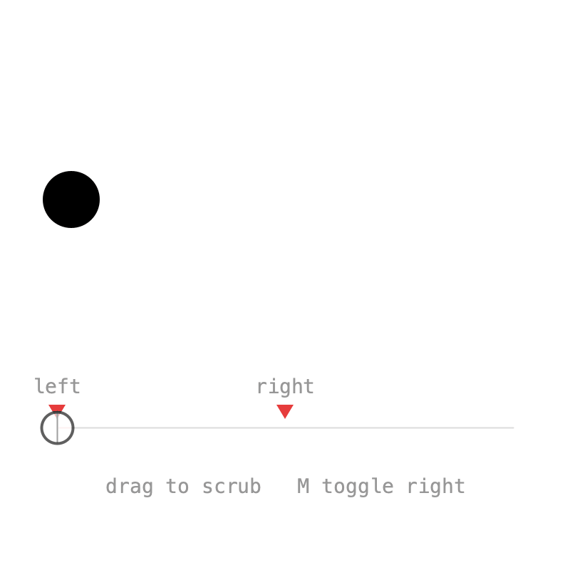
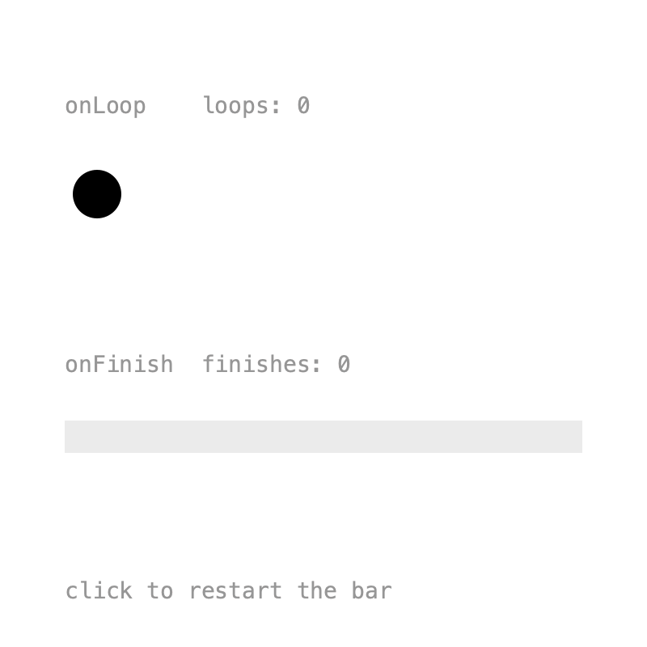

4. Events¶
Animations often need to trigger something: a sound, a particle burst, the next scene. Timelines can call you back at specific times, when they loop, and when they finish.
Markers¶

A marker calls back whenever playback crosses its time. It can be placed at a time or on a pin, and optionally named:
hit = Pin.at(1.5f);
x = Keyed.ofFloat()
.key(0, 50f)
.key(hit, 350f)
.key(3, 50f);
tm.addMarker("left", 0, this::fired);
tm.addMarker("right", hit, this::fired);
The callback receives the Marker, with its name() and t():
Placing a marker on the key's pin means it fires exactly when the ball arrives, even after the pin is moved.
Markers fire during playback in either direction, also when a loop wraps around. Jumping with to(t) fires nothing, but to(t, true) fires every marker passed on the way. That's what the sketch uses while scrubbing:
Markers can be looked up with marker(name) or markers(), and removed with removeMarker(). Press M in the sketch to toggle the right one.
Full sketch: Markers
import ch.domizai.keyed.*;
Timeline tm;
Pin hit;
Keyed<Float> x;
float leftFlash, rightFlash;
String last = "";
float barX0 = 40, barX1 = 360, barY = 300;
void settings() {
size(400, 400);
}
void setup() {
tm = Keyed.init(this).setDuration(3);
textFont(createFont("Courier", 14));
textAlign(CENTER, CENTER);
hit = Pin.at(1.5f);
x = Keyed.ofFloat()
.key(0, 50f)
.key(hit, 350f)
.key(3, 50f);
// A marker calls back whenever playback crosses its time.
tm.addMarker("left", 0, this::fired);
// On the key's pin, it fires exactly when the ball arrives,
// even after the pin is moved.
tm.addMarker("right", hit, this::fired);
}
void fired(Marker m) {
if (m.name().equals("left")) {
leftFlash = 255;
} else {
rightFlash = 255;
}
last = m.name() + " at " + nf(m.t(), 1, 2);
}
void draw() {
background(255);
if (mousePressed) {
// to(t, true) fires the markers passed on the way, in either direction.
// A plain to(t) jumps silently.
float t = map(constrain(mouseX, barX0, barX1), barX0, barX1, 0, tm.duration());
tm.to(t, true);
}
// Walls that flash when their marker fires.
noStroke();
fill(230, 60, 60, leftFlash);
rect(20, 60, 10, 160);
fill(230, 60, 60, rightFlash);
rect(370, 60, 10, 160);
leftFlash *= 0.9f;
rightFlash *= 0.9f;
fill(0);
circle(x.value(), 140, 40);
// The bar, with every marker and the playhead.
stroke(220);
line(barX0, barY, barX1, barY);
for (Marker m : tm.markers()) {
float mx = map(m.t(), 0, tm.duration(), barX0, barX1);
noStroke();
fill(230, 60, 60);
triangle(mx - 6, barY - 16, mx + 6, barY - 16, mx, barY - 6);
fill(150);
text(m.name(), mx, barY - 30);
}
stroke(0);
float head = map(tm.t(), 0, tm.duration(), barX0, barX1);
line(head, barY - 10, head, barY + 10);
noStroke();
fill(0);
text(last, width / 2, 250);
fill(150);
text("drag to scrub M toggle right", width / 2, barY + 40);
}
void mousePressed() {
tm.play(false);
}
void mouseReleased() {
tm.play(true);
}
void keyPressed() {
if (key == 'm' || key == 'M') {
// Markers can be looked up by name, removed and added again.
Marker m = tm.marker("right");
if (m != null) {
tm.removeMarker(m);
} else {
tm.addMarker("right", hit, this::fired);
}
}
}
Loop and finish¶

onLoop() is called every time a looping timeline wraps around. onFinish() is called once when a non-looping timeline reaches its end:
tm.onLoop(t -> loops++);
once = new Timeline().setDuration(2, false);
once.onFinish(t -> {
finishes++;
doneFlash = 255;
});
After restarting with once.to(0), onFinish() fires again at the end. To stop listening, keep the lambda in a variable and pass it to removeListener().
Full sketch: LoopFinish
import ch.domizai.keyed.*;
Timeline once;
Keyed<Float> x, progress;
int loops = 0;
int finishes = 0;
float doneFlash = 0;
void settings() {
size(400, 400);
}
void setup() {
Timeline tm = Keyed.init(this).setDuration(1);
textFont(createFont("Courier", 14));
x = Keyed.ofFloat()
.key(Key.at(0).setEasing(1 / 3f), 60f)
.key(Key.at(0.5f).setEasing(1 / 3f), 340f)
.key(Key.at(1).setEasing(1 / 3f), 60f);
// Called every time a looping timeline wraps around.
// To stop it later, keep the lambda in a variable and pass it to removeListener().
tm.onLoop(t -> loops++);
// Plays once, in 2 seconds.
once = new Timeline().setDuration(2, false);
progress = Keyed.ofFloat()
.setTimeline(once)
.key(0, 0f)
.key(2, 1f);
// Called once when a non-looping timeline reaches its end.
once.onFinish(t -> {
finishes++;
doneFlash = 255;
});
}
void draw() {
background(255);
noStroke();
fill(150);
text("onLoop loops: " + loops, 40, 70);
fill(0);
circle(x.value(), 120, 30);
fill(150);
text("onFinish finishes: " + finishes, 40, 230);
fill(235);
rect(40, 260, 320, 20);
fill(0);
rect(40, 260, 320 * progress.value(), 20);
fill(230, 60, 60, doneFlash);
text("done!", 40, 310);
doneFlash *= 0.95f;
fill(150);
text("click to restart the bar", 40, 370);
}
void mousePressed() {
// After restarting, onFinish fires again at the end.
once.to(0);
}
Next: Binding.